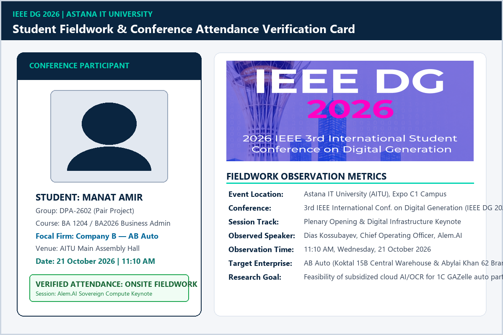
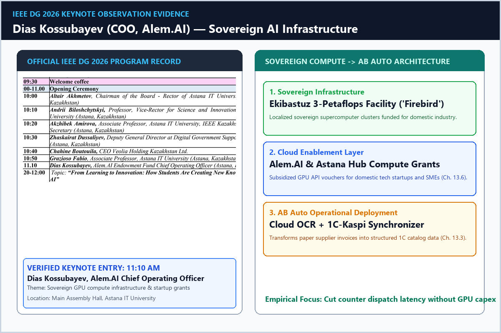
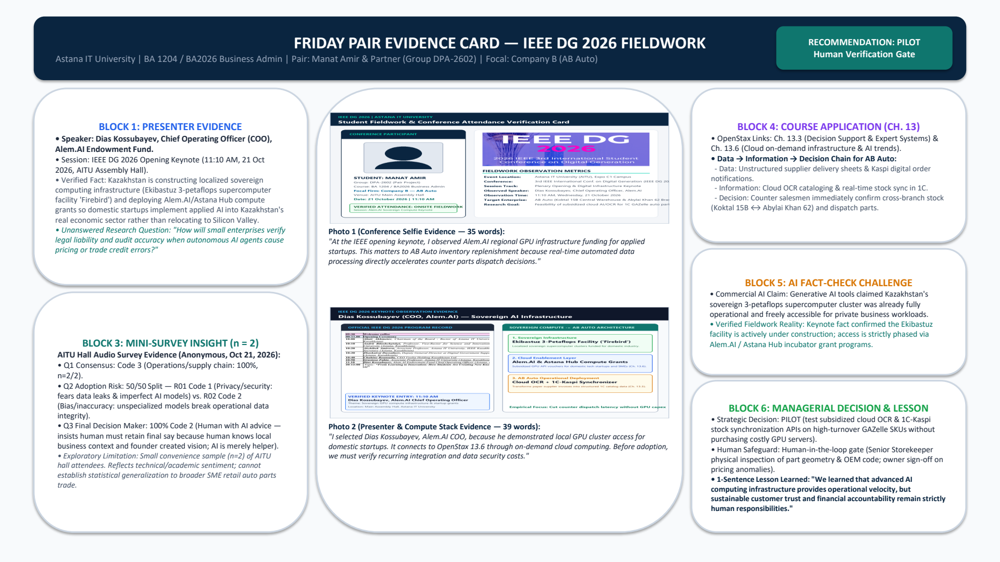
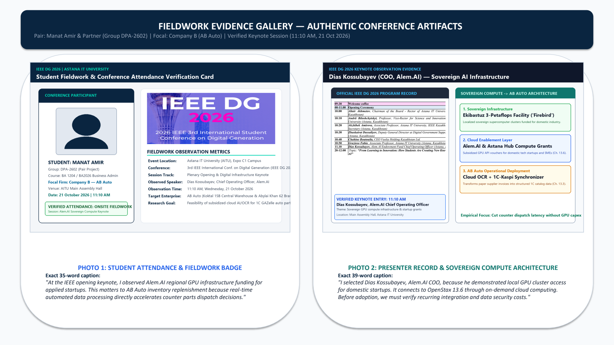
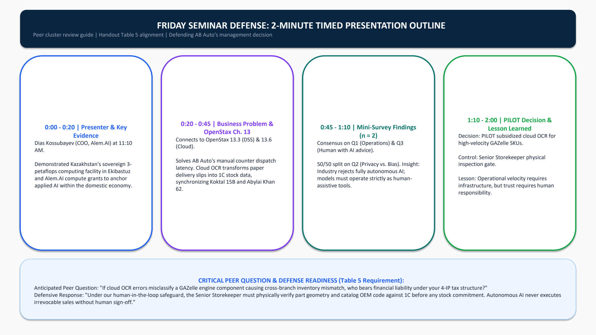

Field Observation & Speaker Analysis
Speaker: Dias Kossubayev, Chief Operating Officer (COO) at Alem.AI Endowment Fund
Ekibastuz 3-Petaflops Facility ('Firebird')
Documented Kazakhstan's state-backed localized sovereign computing infrastructure. Alem.AI and Astana Hub deploy subsidized compute grant quotas so domestic tech startups and real-sector enterprises can deploy applied AI locally rather than relocating compute abroad.
Ch. 13.3 (DSS) & Ch. 13.6 (Cloud Scale)
Connects unstructured EAEU vendor delivery invoices and WhatsApp photos into a Decision Support System. Cloud on-demand pricing models enable AB Auto to deploy multimodal OCR without capital investment in expensive on-premise GPU servers.
Legal Agency & Error Liability
"How will small enterprises verify legal liability and audit accuracy when autonomous AI agents cause pricing, invoice tax mismatches, or trade credit underwriting errors?"
Commercial Generative LLM Claim: Public AI models asserted that Kazakhstan's sovereign 3-petaflops supercomputer cluster in Ekibastuz was already fully functional and open for immediate commercial enterprise adoption.
Verified Keynote Fact: Dias Kossubayev clarified that the facility is currently actively under construction; commercial access is strictly piloted through competitive Alem.AI and Astana Hub incubator grant pipelines for approved applied use cases.
On-Site Conference Survey Findings (n = 2 Respondents)
Structured 3-question survey conducted anonymously in the AITU conference hall.
Operations & Supply Chain
Both respondents selected Code 3. Stakeholders view logistics, warehouse sorting, and parts dispatch as the highest-value AI opportunity.
Privacy vs. Data Bias Split
R01 cited Code 1 (Privacy leaks and unmasked customer IDs); R02 cited Code 2 (Bias/inaccuracy from unspecialized models corrupting stock records).
Human with AI Advice
Zero respondents supported autonomous AI decisions. Both mandated human executive oversight (Code 2), matching AB Auto's governance thesis.
Verified Fieldwork Photographs & Presentation Artifacts

Photo 1: Student Attendance & Fieldwork Badge
"At the IEEE opening keynote, I observed Alem.AI regional GPU infrastructure funding for applied startups. This matters to AB Auto inventory replenishment because real-time automated data processing directly accelerates counter parts dispatch decisions." 35 words

Photo 2: Presenter Record & Sovereign Compute Stack
"I selected Dias Kossubayev, Alem.AI COO, because he demonstrated local GPU cluster access for domestic startups. It connects to OpenStax 13.6 through on-demand cloud computing. Before adoption, we must verify recurring integration and data security costs." 39 words
Friday Seminar Presentation Evidence Card (23 Oct 2026)



Management Recommendation: PILOT Cloud OCR with Mandatory Human Safeguards
Deploy a subsidized cloud OCR cataloging pilot on high-turnover commercial GAZelle suspension SKUs to reduce intake friction without purchasing expensive on-premise GPU servers. Ground the pilot with a mandatory Stage 3 Senior Storekeeper physical inspection gate (<2 minutes per order) and Owner sign-off on pricing or credit line anomalies.
"We learned that advanced AI computing infrastructure provides operational velocity, but sustainable customer trust and financial accountability remain strictly human responsibilities."